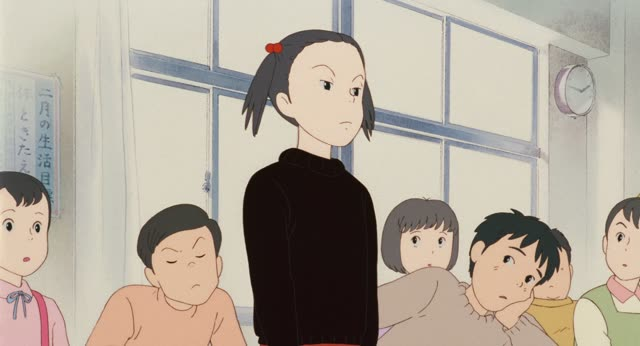

がいる
| There is | There isn't | |
|---|---|---|
| Polite | います | いません |
| Casual | いる | いない |
Same meaning: "there is" (people, animals). Only the politeness changes.
Making it negative: いる becomes いない, and が often turns into は or も.
犬がいる "I have a dog"
犬はいない "A dog? Don't have one."
犬もいない "No dog either" (no cat, and no dog too)

Only Yesterday
最近、給食を残す人がいます。
"Lately, some of you have been leaving your school lunch."
がいる says someone is there: "there is", or "I have" for people. The person or animal goes first, then が, then いる. Things use ある instead.
On this card, a teacher is talking to the class. The sentence answers "Is there anyone who...?": yes, some kids leave food. 残す = leave uneaten, 給食 = school lunch.

1 Litre of Tears · Episode 9
色んな生き物がいるね。
"There are all kinds of creatures, huh." [at an aquarium]
いる is for things that are alive and move by themselves, like people and animals. ある is for everything else, even trees and flowers. On this card, a family looks at a huge tank full of fish, so it's いる.
Quick Examples
You call a shop and ask if the manager is in.
今、店長がいますか？
"Is the manager there right now?"
Add か and it's a question: "is someone there?".
PoliteA coworker asks about your family.
姉がいます。
"I have an older sister."
"I have" a person is also いる: brothers, kids, friends.
PoliteYou look into the garden and point.
あ、猫がいる。
"Oh, there's a cat."
Animals are いる too, even tiny ones like spiders.
CasualYou arrive at the beach early in the morning.
誰もいない。
"Nobody's here."
The "not" of いる is いない. 誰もいない: "nobody is there".
CasualYou just moved to a new city and someone asks how it's going.
仕事もないし、友達もいない。
"I don't have a job, and no friends either."
が becomes も and いる becomes いない: "no friends either". A job is a thing, so it's ない, not いない.
CasualWith and without
猫です。
"It's a cat." You're naming what it is.
猫がいます。
"There's a cat." You're saying it's there.
友達があります。
Sounds like a friend is an object you own.
友達がいます。
"I have a friend." People take いる.
Examples from Media

Kekkon Dekinai Otoko · Episode 10
あっ、そうだ。桑野さんに、ちょうどいい人がいます。
"Oh, I know! There's someone just right for Mr. Kuwano."
ちょうどいい人 ("someone just right") + がいます. People take いる.

Kotaro Lives Alone · Episode 5
ちなみに、子供もいますよ。
"By the way, I have a kid, too."
も takes the place of が: "a kid too". "I have" a person is いる.

Legal High · Episode 8
メイさんには友達がいません。
"Mei doesn't have any friends."
いません is the negative of います. For people, "doesn't have" is also いる.

New Atashin'chi · Episode 1
うちには最終兵器がいるからなあ。
"Well, we've got our ultimate weapon at home."
The "weapon" is alive, so it's いる, not ある.

Slam Dunk · Episode 96
あれ、先客がいるぜ。
"Huh, someone's already here."
先客 is someone who got there first. ぜ is a rough, casual ending.
Vinland Saga · Episode 10
母上がいる。
"Mother is here."
A person, so いる, not ある.

Shirokuma Cafe · Episode 46
笹子さんがいるよ。
"There's Sasako."
A person, so it takes いる.

Shirokuma Cafe · Episode 24
パンダくん、いい人がいるよ。
"Panda, there's someone good for you."
Same いる, here introducing someone.
Further Reading
A Dictionary of Basic Japanese Grammar
Entry "iru¹" (exist) · pp. 153–155